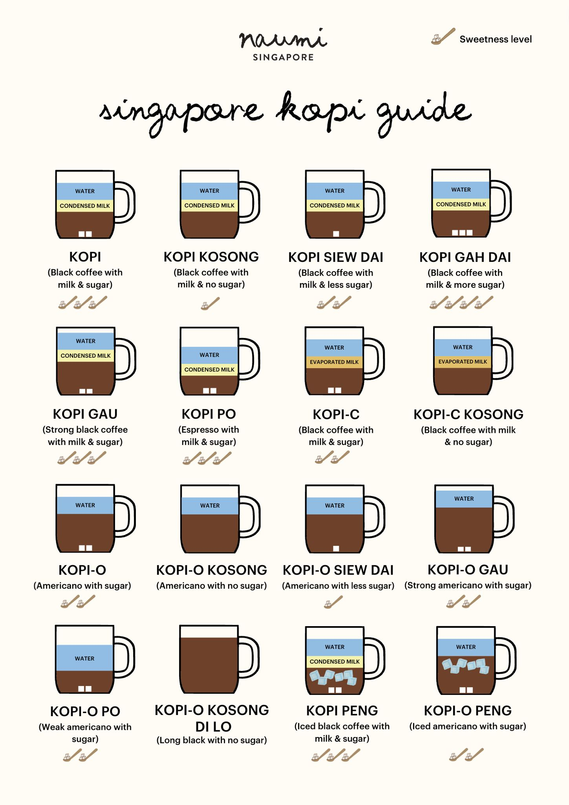

Introduction
When I first got nominated and eventually selected for the NUS Young Fellowship Program, I was over the moon and I did not know this opportunity would become one of the most mind-blowing experiences of my academic life so far. As one of the five students picked from India, alongside some brilliant minds from IIT Bombay and IIT Madras, I felt a mix of pride and nervous excitement. My essay titled “Guardrails” (check it out on my blog under the Madhav Lekhani section) had somehow managed to impress the selection committee and opened the door to this incredible journey.
This wasn’t just another academic program – it was bringing together nearly 90 students from more than 20 different countries. The diversity was mind-boggling. We were from India, China, USA, UK, Hungary, Japan, South Korea, Malaysia, Australia, Singapore, Saudi Arabia, Philippines, Canada, Vietnam, Thailand, and more. Let’s say a global village which NUS already is!
As I packed my bags for this week-long adventure in learning, I knew I was in for something special. My dad (I call him Dada) came with me till Bombay Airport since it was first time I was travelling international.
Day 0: Touchdown in the Lion City
Stepping off the plane in Singapore, I was hit by two things – the humidity (whew!) and the jaw-dropping efficiency of Changi Airport. This place runs like a well-oiled machine! Although NUS had arranged transportation, I decided to grab a taxi for a quick tour of the city before hitting the sack. As we zipped past gleaming skyscrapers and lush greenery, I felt a tingle of excitement for the week ahead. The NUS campus welcomed me with open arms (and comfy accommodation). As I settled in, I decided to take a stroll around University town with other fellows and had intros and handshakes with a lot of people. What groundbreaking research would I see? Who would I meet? And most importantly, would the CS department be as amazing as everyone says it is? (Spoiler alert: it was!)

Day 1: Diving into the Deep End
Morning: Breaking the Ice and Blowing Our Minds
The program kicked off with some ice-breakers that were actually fun (shocking, I know!). It was here that I met my squad – Rena, Yi Xin, Xinming, and Swastika. We were dubbed Group 12.
Our first lecture was by Professor Chai Kah Hin, who dove headfirst into a mind-bender: “How will GenAI change PhD research?” As we wrapped our heads around this, Prof. Chai kept pushing us to ask “So what?” – making us really think about the impact and relevance of our research ideas.
He introduced us to this cool concept called the “ghost deck” – basically creating a storyboard of your presentation before getting into the nitty-gritty. Apparently, it’s a trick used by big shots like McKinsey to keep their presentations tight and logical. Mental note: must try this for my next class project!

Afternoon: Problem-Solving Like a Boss
Prof. Chai wasn’t done with us yet. His mantra of “Rough, Rapid, Right” stuck with me – the idea that making quick mistakes is actually a good thing. It’s all about learning fast and adapting faster. He also talked about horizontal and vertical logic in presentations, emphasizing the need for a clear, newspaper-like summary to hook your audience from the get-go. I could almost hear my future self thanking him during my next group presentation!
Pro tip: If you ever find yourself in Singapore, don’t miss out on trying the local kopi (coffee). It’s like rocket fuel for your brain during intense brainstorming sessions!
We rounded off the afternoon with a quick but eye-opening lecture by Dr. Amirhassan Monajemi on Generative AI. While a lot of it was familiar territory for us computer science geeks, seeing how it’s being applied across different fields at NUS was fascinating. It’s one thing to code an AI model, but seeing it potentially reshape entire industries? Although I found myself yawning during this lecture, I went out and took a Kopi to keep myself fresh. Actually Luo helped me to get to know about Kopi. I am attaching one guide here for your reference that I used over remaining week.


Evening: The Ethics of AI
The highlight of the day was hands down the session on AI and ethics by Simon Chesterman, Dean of the NUS Faculty of Law. This guy didn’t just lecture; he made us question everything we thought we knew about education and technology.
Dean Chesterman painted a vivid (and slightly unsettling) picture of the challenges universities face in the AI era. He threw some real curveballs at us: Are students customers or products? How do we evaluate people when AI can basically be a performance-enhancing drug for the mind?
He started by addressing the elephant in the room – the fear of AI turning into Skynet and taking over the world. While he didn’t completely rule out the possibility (gulp!), he was more concerned about how we humans might misuse this insanely powerful tech.
One thing that really stuck with me was his point about AI’s current limitations. Apparently, experts in specific fields can often spot AI’s mistakes in their domains quicker than you can say “ChatGPT.” It was a good reality check – AI might be smart, but it’s not omniscient (yet).

The role of universities in this brave new AI world was a big talking point. Chesterman dropped a truth bomb – the age-old notion of professors knowing more than students is becoming as outdated as dial-up internet. With all the world’s knowledge at our fingertips (or more accurately, in our smartphones), universities need to focus on teaching us how to think, not just what to think.
We also dove into the ethical minefield of AI in various fields. In research, for instance, AI is doing some pretty cool stuff like speeding up drug discovery. But it also raises some tricky questions about plagiarism and the temptation to take shortcuts. Chesterman stressed the importance of separating the hype from reality when it comes to AI’s capabilities.
One of the most thought-provoking parts of the discussion was about responsibility in the AI era. Who’s to blame when an AI system messes up? The developers? The users? The data it was trained on? It’s like trying to nail jelly to a wall – slippery and complicated.
After the session, some graduate students took us for a guided campus tour where I got to know about a lot of folks and had some interesting conversations with friends from Japan and South Korea.
Over dinner at a local hawker center near Clementi mall which is very close to University Town, our group, along with a couple of others, started with debate about the future of creativity and AI’s role in the arts. The diversity of viewpoints, influenced by our varied cultural backgrounds, made for a conversation which later ended up into a conversation of stories our stories to each other. I walked nearly 18km that day!! (eventually I breached 30km mark).
Day 2: From PhD Dreams to Workplace Scenarios
Morning: PhD Tales That’ll Make You Laugh, Cry, and Think
We kicked off the day with a panel discussion featuring PhD candidates and recent graduates. Their stories were like a rollercoaster ride through academia – full of ups, downs, and unexpected loops. I was particularly struck by Dr. Boyd Anderson from New Zealand. This guy went from tinkering with embedded systems to revolutionizing how we teach – talk about a plot twist!
The biggest takeaway? Choosing the right supervisor and institution is like picking a life partner – it can make or break your academic journey. As one panelist put it, “The institution matters, but within it, your supervisor matters most.” Note to self: choose wisely!
Afternoon: The Dark Side of Office Life
Professor Sandy Lim’s session on Workplace Incivility was an eye-opener. Using Structured Equation Modeling, she dropped some truth bombs about how rudeness can wreck a workplace.
Here’s the tea:
- Workplace incivility is more common than bad coffee in offices – a whopping 91% of employees in Asia reported experiencing it. Yikes!
- Your boss being a jerk affects you more than your annoying cubicle mate when it comes to wanting to quit.
- Rudeness can spread through an office faster than gossip if left unchecked.
In the evening, we visited robotics lab and nano-materials lab. I got to handle an electron microscope and also play with a robotic car. That day, I along with other vegeterian friends, visited Anand Bhawan in Little India and had very home like dinner whereas our non-vegeterian friends enjoyed their meals in a restaurant inside NUS. We also went to clark quay for a walk.

Day 3: From Nano-Wonders to Urban Jungles
Morning: The Invisible Tech Running Our World
Professor Aaron Thean’s lecture on semiconductors was equivalent to diving into a sci-fi novel, except it was all real! He started with a bang: “If you don’t have semiconductors, you don’t have technology.”
I was listening very mindfully that I was able to note these points only.
- Moore’s Law isn’t just about cramming more transistors onto a chip; it’s a testament to human ingenuity and stubbornness.
- Current AI, with far fewer parameters than our brains, guzzles energy like there’s no tomorrow – millions of times more than our noggins!
- His research on rewritable chips, mimicking our brain’s plasticity, hinted at a future where our gadgets might think more like us. Exciting or terrifying? You decide!
As Prof. Thean geeked out about photonic chips and 3D chip architecture, I thought about future devices that might blur the line between silicon and neurons. Who knows, maybe one day our phones will literally read our minds!
Morning: Harnessing Nature’s Power (Without Angering the Weather Gods)
Dr. Ghim Wei Ho’s session on solar technologies. Her research on tapping into low-grade heat fluctuations opened my eyes to energy sources we’ve been overlooking.

Did you know that roof gardens can actually make solar panels work better and last longer? It’s like giving your panels a cool, green hat. Nature and tech, working hand in hand – now that’s what I call smart! Niladri, a undergrad from UMich asked a ton of questions in this session.
Afternoon: Transforming Concrete Jungles into Digital Paradises
Ervine Lin’s lecture on digitizing landscapes. He challenged us to see beyond trees and buildings to the designed environments shaping our cities and lives.

Some “cool” takeaways:
- Singapore’s urban planning philosophy evolved from “Garden City” to “City in Gardens” – subtle difference, massive impact!
- 3D scanning and reality capture tech are revolutionizing landscape architecture. It’s like SimCity, but for real!
- Understanding topography is crucial in urban planning, especially for flood prevention. (Note to self: maybe reconsider that beachfront property dream…)

After the lectures, we hopped on NUS buses for a tour of Singapore’s highlights – Gardens by the Bay, cloud forest, flower dome(nature on steroids!), the iconic Merlion (half-lion, half-fish, 100% Instagram-worthy (alothought I don’t use instagram yet), and some architectural marvels that made my neck hurt from looking up so much.
The evening was a culinary adventure through Little India and Chinatown. As we stuffed our faces with everything we liked, I marvelled at how this tiny island nation had become a melting pot of cultures and cuisines. It was like taking a world tour without leaving the city!


Day 4: Health, Wealth, and the Art of Not Boring People to Death
Morning: AI: Your New Healthcare Bestie?
Professor Dean Ho’s session on N-of-1 Digital Health felt like peering into the future of medicine. His WisDM and CURATE platform, which uses AI to tailor treatments to individual patients, sounded like something out of a sci-fi movie.
Key mind-blowers:
- The old “one-size-fits-all” approach to medicine? Yeah, that’s so last century.
- AI could be the key to cracking the code on personalized cancer treatments. Take that, cancer!
- In healthcare data, it’s all about “stories over snapshots” – looking at trends rather than isolated data points. It’s like Netflix for your health, but instead of recommending shows, it’s saving lives.
Prof. Ho also dove into the gamification of healthcare. Imagine earning points for taking your meds or hitting your step goal – suddenly, being healthy becomes as addictive as your favorite mobile game! I bombarded him with questions after the session (sorry, not sorry!), and to his credit, he answered every single one with patience and enthusiasm. It’s not every day you get to pick the brain of someone who’s literally changing the face of healthcare!
Afternoon: Economics in the Age of AI
The lecture on economic strategies for the 5.0 era was like trying to predict the weather – fascinating, complex, and slightly terrifying. The key takeaways?
- We need to rewire our brains when it comes to economic development. The old rules? They’re about as relevant as a floppy disk in 2024.
- It’s time to question everything we thought we knew about economics.
- Crafting economic strategies that play nice with AI and automation is the new holy grail.
As I sat there, furiously scribbling notes, I was thinking: in this brave new world, would my future job even exist? Or would I be competing with a hyper-intelligent AI for that corner office? (Note to self: start being nicer to Claude and Alexa, just in case.)
Afternoon: The Art of Not Boring People (In Three Minutes or Less)
The 3-Minute Thesis (3MT) workshop by Rafi Rasheed and Jason Banta was like a crash course in not putting people to sleep while talking about your research. Their golden rules:
- Start with a bang! Your opening line should grab attention faster than a cat video on social media.
- Use stories that people can relate to.
- Problem, solution, impact – the holy trinity of any good pitch. If you can’t explain it to your grandparentts, you’re doing it wrong.
Later before evening Prof Johannes Widodo took us to architectural tour of academic building of department of architecture.
We spent the evening practicing our pitches, giving each other feedback, and trying not to panic at the thought presenting the poster in front of everyone. It was challenging, hilarious, and oddly exhilarating. Since next day was presentation day, we did not go for any outdoor adventures. We visited the merchandise store in NUS, bought few things, had some snacks and started working on presentations. Although our group did not make it to finals (ig we missed it with very small margin becasue of too much text on poster), we enjoyed the work we did and got to learn a lot from posters of other groups.


Day 5: Battling Urban Heat and Jamming with AI
Morning: Saving the World, One Cool Roof at a Time
Professor Wong Nyuk Hien’s lecture on the CoolNUS Project was an eye-opener on urban climate challenges. Who thought buildings could throw tantrums and create their own weather?
Cool facts (pun intended):
- Turns out, tall buildings are like giant sunglasses for cities during the day. They create a “Cool Island Effect” – nature’s air conditioning!
- In Singapore, cranking up the AC by just 1°C can spike cooling demand by 7-10%.
- Urban greenery isn’t just pretty – it’s a secret weapon against rising temperatures. Time to turn those concrete jungles into actual jungles!
The best part? Seeing how AI and 3D graphics are being used to design cooler cities. It’s like SimCity, but with real-world impact!
Afternoon: When AI Drops the Beat
The program finale with Francis Tan exploring AI and Music was mind-blowing. We played around with tools like SUNO and UDIO, pushing the boundaries of what we thought was possible in music creation.
Francis broke down the recipe for a good song:
- Authenticity - real feelings, not just auto-tuned emotions
- Connection - themes that hit you right in the feels
- Catchiness - melodies that stick in your head like that annoying jingle from that one commercial
As we experimented with AI-generated tunes, everyone debated about the future of creativity. Can a machine really capture the soul of music? Or are we on the brink of a new era of human-AI collaboration in art? The jury’s still out, but one thing’s for sure – the music industry is in for one wild ride!

The Grand Finale: Posters, Presentations, and Goodbyes
As the program neared its end, our group pulled an all-nighter on second last night to put the finishing touches on our poster and presentation. Fueled by a mix of excitement, caffeine, and the fear of embarrassing ourselves in front of some of the brightest minds in academia, we worked through the night. It was exhausting, exhilarating, and oddly fun – a perfect microcosm of the entire week.


The next day, as everyone presented their projects, I was blown away by the creativity and innovation on display. From AI-powered solutions for sustainable agriculture to novel approaches in quantum computing, the range of ideas was staggering. As the program officially came to a close, a bittersweet feeling settled over us all. We’d come as strangers from different universities but were bonded so close during such short period. That evening we went to an extra mile to squeeze out joy from every moment. We visited so many tourist attractions. We also went to Casino as entry was free for foreginers (just to see it from inside!). This is the day which made me breach 30km mark. Also, after coming back to U Town around 2AM, we wandered inside U Town till 4:30 AM. Next day, half of us came together to the aiport, bid farewell to each other. Everyone became so emotional at this point that some among us literally sobbing. I said goodbye to everyone. But the jounery together was not over, we will spend some time together remotely, to prepare our 3MTs and will present them to the jury.
To anyone considering applying to the NUS Young Fellowship Program – do it! It’s an unparalleled opportunity to immerse yourself in a world-class research environment, engage with leading academics, and connect with exceptional peers from around the globe. The program offers a perfect blend of academic rigor and cultural exploration, all set against the backdrop of Singapore’s unique blend of tradition and innovation.
Update : 3MT is done. It was really really good to listen to knowledge-dense pitches.
After farewell, I roamed around the airport for an hour or two with few friends who were still to board their flights. Then I sat at starbucks for 2 hours since my flight was delayed beause of bad weather. It was here that I finetuned my digital journal. As I boarded my flight home alone, I couldn’t help but feel that this was just the beginning. The connections made, the knowledge gained, and the inspiration sparked during this week will undoubtedly shape my academic journey for years to come. The NUS Young Fellowship Program didn’t just show me the cutting edge of research and innovation – it invited me to be a part of it.
Note : My notes were very scattered, I have taken help from Claude Sonnet 3.5 on 30 Sept 2024 to make them coherent.